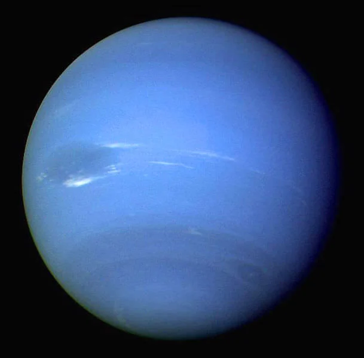
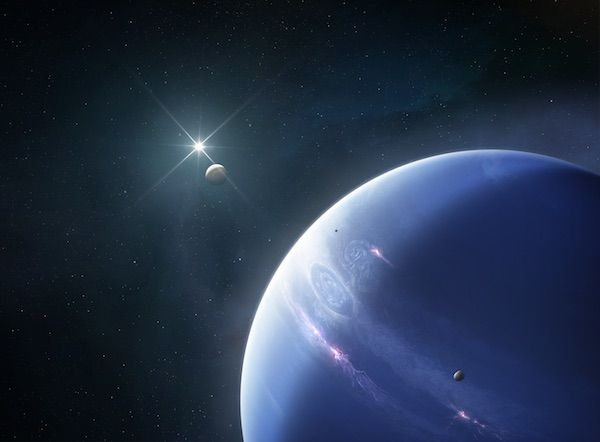

Facts about Neptune!
- Neptune is the eighth and farthest known planet from the Sun.
- Neptune is an ice giant, with a thick atmosphere of hydrogen, helium, and methane.
- Neptune has a strong magnetic field and a system of rings, though they are faint and difficult to observe.
- Neptune has 14 known moons, with Triton being the largest and most famous.
- It rains diamonds on Neptune!!!!!!


MORE facts about Neptune!
- Neptune was discovered in 1846 by Johann Galle and Heinrich d'Arrest, based on predictions made by Urbain Le Verrier.
- Neptune has the strongest winds in the solar system, with speeds reaching up to 2,100 km/h (1,300 mph).
- Neptune's atmosphere contains methane, which gives it its characteristic blue color.
- Neptune has a very long orbit, taking about 165 Earth years to complete one revolution around the Sun.
- Neptune has a very cold surface, with average temperatures around -214°C (-353°F).